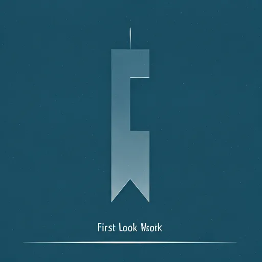
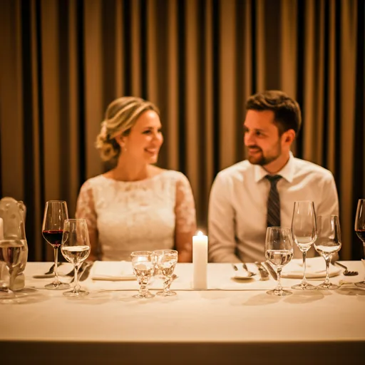

Euer Tag, euer Tempo: Warum ein guter Ablaufplan die schönsten Momente erst möglich macht.
In über 13 Jahren als Hochzeitsfotografin in Kassel habe ich mehr als 200 Paare begleitet — von den leisen Momenten am Morgen bis zu den wilden Tänzen nach Mitternacht. Und wenn ich eines gelernt habe, dann das: Die schönsten Bilder entstehen nicht, wenn alles durchgetaktet ist, sondern wenn ihr euch fallen lassen könnt. Ein guter Zeitplan gibt euch genau diese Freiheit. Nicht als starres Korsett, sondern als Sicherheitsnetz, das euch den Raum schenkt, jeden Augenblick wirklich zu genießen. In diesem Guide teile ich mit euch, was ich in all den Jahren über den Ablauf eines Hochzeitstages gelernt habe — ganz ehrlich, ganz persönlich und mit jeder Menge Kassel-Tipps.
Das Getting Ready
Der Morgen eurer Hochzeit gehört ganz euch. Lasst ihn langsam beginnen — ohne Hektik, ohne Zeitdruck. Die Verwandlung zur Braut oder zum Bräutigam ist ein unglaublich intimer Moment, voller Vorfreude, ein bisschen Nervosität und ganz viel Liebe. Ob im stilvollen Schlosshotel Bad Wilhelmshöhe mit Blick auf den Bergpark, in einer schönen Suite im Renthof oder ganz gemütlich zuhause — das Getting Ready setzt den Ton für euren gesamten Tag.
Ich komme meist 2–3 Stunden vor der Trauung dazu und halte die leisen Details fest: den Duft des Parfums, die zitternden Hände beim Zuknöpfen des Kleides, das Lachen mit der besten Freundin. Das sind oft die Bilder, die euch später am meisten berühren.
„Plant mindestens 30 Minuten mehr Puffer ein, als euer Stylist veranschlagt. Glaubt mir — nach über 200 Hochzeiten weiß ich, dass es morgens immer länger dauert als gedacht. Und nichts tötet die gute Stimmung so schnell wie Zeitdruck vor dem Spiegel."
First Look & Paarfotos
Dieser Moment gehört nur euch beiden. Der Augenblick, in dem ihr euch zum ersten Mal in voller Hochzeitskleidung seht — das ist pure Emotion, ungestellt und echt. Immer mehr meiner Paare entscheiden sich für einen First Look vor der Trauung, und ich kann es nur empfehlen. Ihr habt Ruhe, Privatsphäre und die Möglichkeit, den Moment wirklich zu spüren.
Kassel bietet dafür Kulissen, die ihresgleichen suchen: Der Bergpark Wilhelmshöhe mit seinen alten Baumgruppen und dem Blick auf den Herkules, die romantische Löwenburg mit ihren verwitterten Steinmauern oder die stillen Ecken der Karlsaue — hier entstehen zeitlose Porträts, die ihr ein Leben lang anschaut.
„Wenn wir zum Bergpark fahren, rechnet unbedingt mit den Fahrtzeiten. Samstags kann der Verkehr rund um die Kaskaden zäh sein — plant 15 Minuten extra ein. Mein Geheimtipp: Der Bereich bei der Löwenburg ist oft menschenleer und bietet traumhaftes Licht."


Die Zeremonie
Der Moment, auf den alles hinarbeitet. Egal ob ihr euch im historischen Standesamt am Rathaus Kassel das Jawort gebt, eine freie Trauung im Bergpark oder in der Karlsaue feiert, oder euch in einer der schönen Kirchen Kassels traut — dieser Augenblick gehört ganz eurer Liebe.
Ich bewege mich während der Zeremonie leise und unsichtbar im Hintergrund. Mein Ziel sind nicht die gestellten Bilder, sondern die echten Emotionen: der Blick eurer Eltern, das Zittern in der Stimme, das befreite Lachen nach dem Ja. In all meinen Jahren als Fotografin habe ich erlebt, dass genau diese ungefilterten Momente die Bilder sind, die euch zu Tränen rühren — im allerbesten Sinne.
Plant nach der Zeremonie eine halbe Stunde Puffer ein für Gratulationen und Umarmungen. Dieser spontane Moment zwischen Trauung und Empfang ist oft voller Freude und ergibt wundervolle Bilder.
Empfang, Dinner & Party
Jetzt wird gefeiert! Der Sektempfang bei Sonnenuntergang, die Reden, die euch zum Lachen und Weinen bringen, das gemeinsame Anschneiden der Torte und schließlich der erste Tanz — das sind die Stunden, in denen alles zusammenkommt. In Kasseler Locations wie der Orangerie in der Karlsaue, dem Kulturbahnhof oder dem Renthof entstehen lebendige, atmosphärische Bilder, die die Stimmung eures Abends einfangen.
Ich bleibe in der Regel bis nach dem Eröffnungstanz und den ersten wilden Partyfotos. Wenn ihr möchtet, komme ich auch für den Sparkler-Exit oder eine Mitternachtsüberraschung noch einmal zurück.
„Plant kurze ‚Golden Hour' Porträts direkt nach der Vorspeise ein — ungefähr 15 Minuten reichen. Das Licht in Kassel ist zu dieser Zeit einfach magisch, besonders an den langen Sommerabenden. Diese Bilder werden oft eure absoluten Lieblinge."


Bereit für eure Geschichte?
Sichert euch euren Termin für 2025 oder 2026. Gemeinsam planen wir die Timeline, die zu euch passt — entspannt, ehrlich und ganz nah dran an dem, was euch als Paar ausmacht.
Termin anfragen